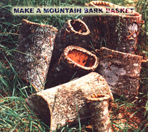
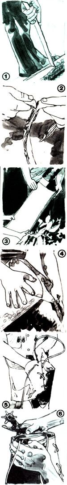

The traditional Appalachian basket-made from the bark of young tulip poplar trees and laced together with smooth strips of hickory-is about as useful and beautiful as any receptacle you're likely to find. Better yet, an experienced "mountain man" (like Paul Geouge ... who taught this craft to me) can "whip up" one of these rustic carryalls in less than half an hour (and that sort of skill can sure come in handy when a long hike leads you to one of those once-in-a-lifetime berry patches!).
What's more, the attractive containers aren't limited to transporting foraged goodies. I've made bark backpacks, wastebaskets, clothes hampers, and-in a slightly-flattened form-even a briefcase!
Paul (who is a local authority on traditional handicrafts) tells me that the best time to strip bark from a tree is in the spring and early summer ... during the main sap flow that peaks, he says, under
the new moon in July. This skilled artisan uses the bark of tulip trees (Liriodendron t ulipifera) to form his baskets, and the inner bark of hickories (genus Carya) for lacing.
However, if such trees don't grow in your area, you can use basswood (Tilia americana) for both container and lacing. The bark of quaking aspen (Populus tremuloides) will also do ... though this material is not as durable as the other possible choices.
Of course, if you can't find any of the above trees in your locale, you can experiment with whatever species are handy. You'll probably find a variety that will work just about as well as the more traditional materials.
(Keep in mind, though, that-regardless of the type of tree you use-the bark that forms the basket itself will be at its flexible best right after it's removed from the trunk. So have all of your other materials ready before you start to "skin" that sapling.)
A good knife is about the only essential tool for this basket craftin', although an awl blade can come in handy when it's time to bore the holes that allow you to lace the container together. (Of course, an adjustable leather punch would make the pokin' job even easier!) A small ax or hatchet will also be helpful, both for felling trees and stripping bark.
Begin your basket by cutting the lacing from a yo ung hickory or basswood. Just start at the bottom of the trunk and peel an inch-wide strip of bark ... pulling the material toward the top of the tree (Fig. 1). Your first "strap" may break off after you've only obtained a foot or two of lacing, but the pieces will come free much more easily-and be longer-with each band of bark that you remove.
Each strip must then be peeled apart and Me outer bark portion discarded (Fig. 2). The remaining ribbons of inner bark should be cc into thin strips.
(Remember, a tree will I die when its bark is stripped, so choose specimens that need to be cleared anyway. Then, once the sap ling is felled, you can get enough lacing for several baskets from its trunk ... as well as a supply of fast-drying-because the wood is no longer insulated by barkkindling.)
The basswood or hickory "strings" will be ready to use immediately, or can be coiled and dried for storage. If you choose to preserve your laces, simply soak them in water for an hour or so before you expect to work with them.
You'll also need a hoop to reinforce the basket's rim. This can be made from the inner hickory bark, too ... but any thin flexible limb will do the job.
Once the lacing and hoop have been gathered, you can prepare the "body" of the basket. Locate a young tree of about three to five inches in diameter and-on a smooth area of the trunk-mark off a section twice the depth of the proposed basket. This piece of bark should be peeled in one sheet-from the entire circumference of the tree, as shown in Fig. 3. (Again, use a tree that would have been cleared anyway, cut it down, and gather the material for several containers from its trunk.)
To assemble your basket, take the large sheet of tulip tree "hide" and spread it out bark side up. Draw a line across this material-halfway between the two short sides and connect the ends of that scribe with two curved arcs ... to form an elongated football shape. Then, use your knife to score the markings through the outer bark, fold the material (carefully!) along the cuts ... and your basket will begin to take its final shape (Fig. 4).
With that done, use your small knife blade, awl, or leather punch to make a series of holes-about two inches apart and an inch in from the bark's edges along each of the four "borders" that will be pulled together to form the container. Then, simply lace up the basket's sides as you would a pair of shoes (Fig. 5).
At this time you should probably whittle the rim of your container until it's smooth. Then bend your "hoop" stick or bark into shape., set it in place around the mouth of the basket, punch another series of holes, and lace the wooden circle onto the container, as in Fig. 6. (You might want to leave a pair of lacing loops hanging from either side in order to fasten a handle to your "carrier".)
You'll find that your finished baskets get lighter and more rigid as they dry Mr. Geouge has several containers that have been in his family for more than 20 years ... and these old beauties are still performing well when taken on summer picnics and berrying expeditions!
What's more-in addition to being sturdy longlasting, and useful-bark baskets can provide you with a ready source of income. Paul often sells his extras at area craft fairs ... and for some pretty fancy prices, too!
"You know," he once confided to me, "some folks that buys these baskets ain't even intendin' to carry anything in 'em. They just want 'em for the curiosity!" Can you imagine that?
|
 |
 |
|